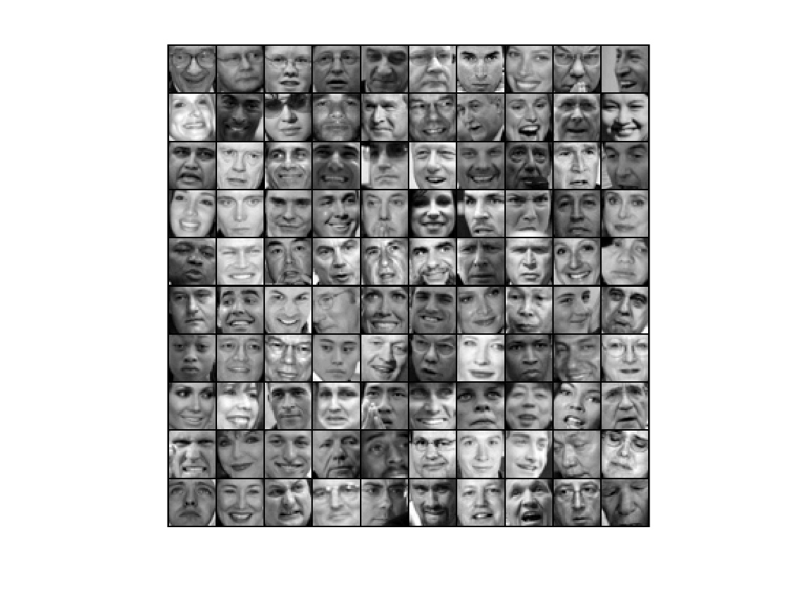
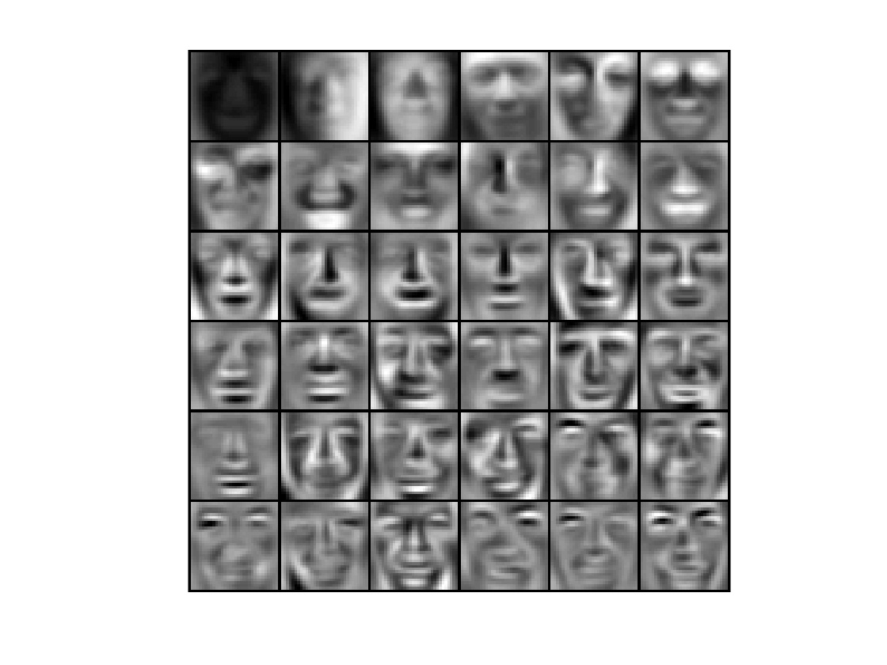
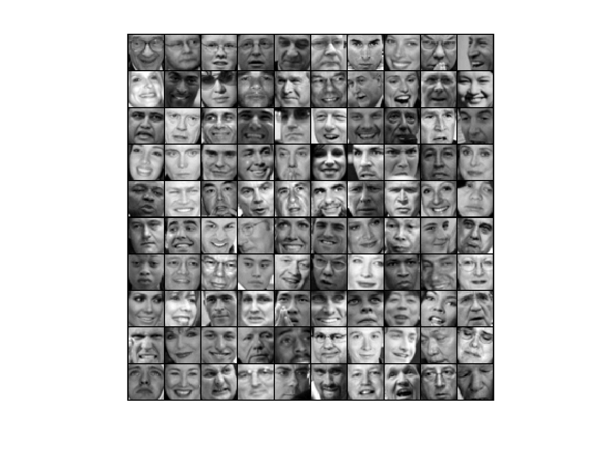
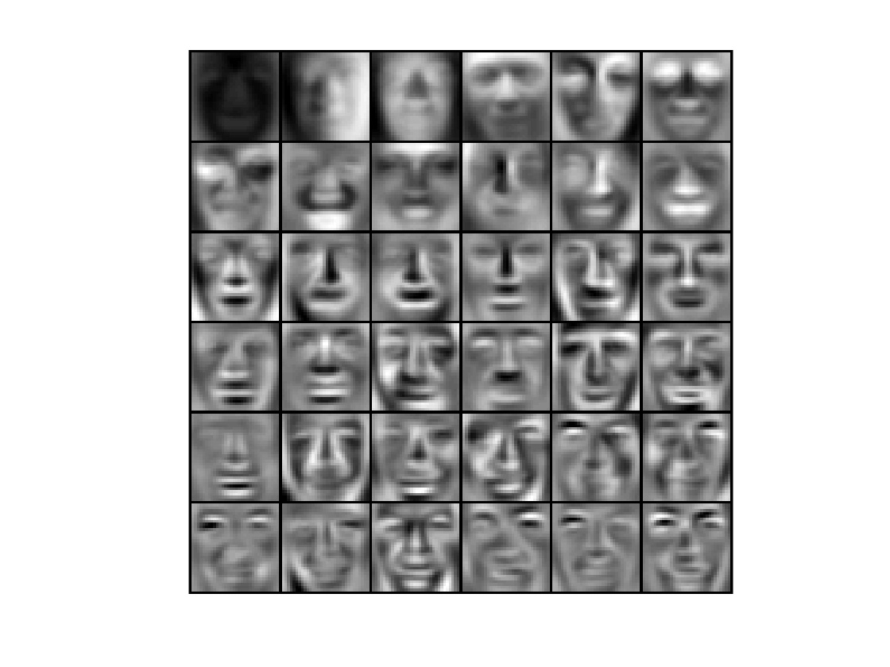
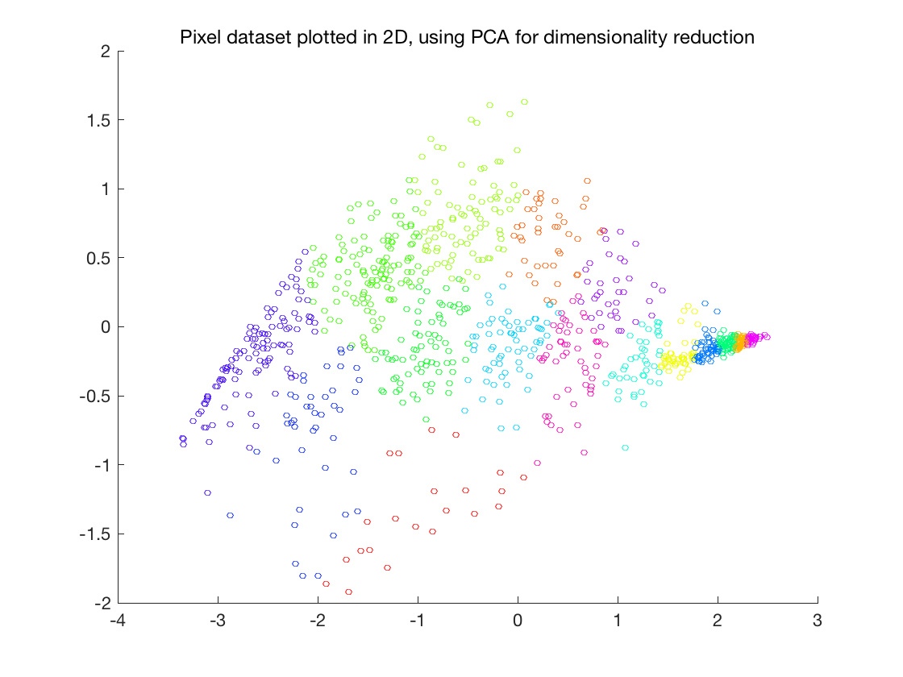
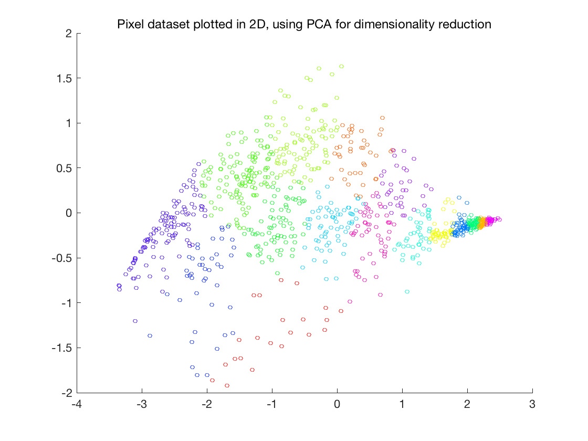
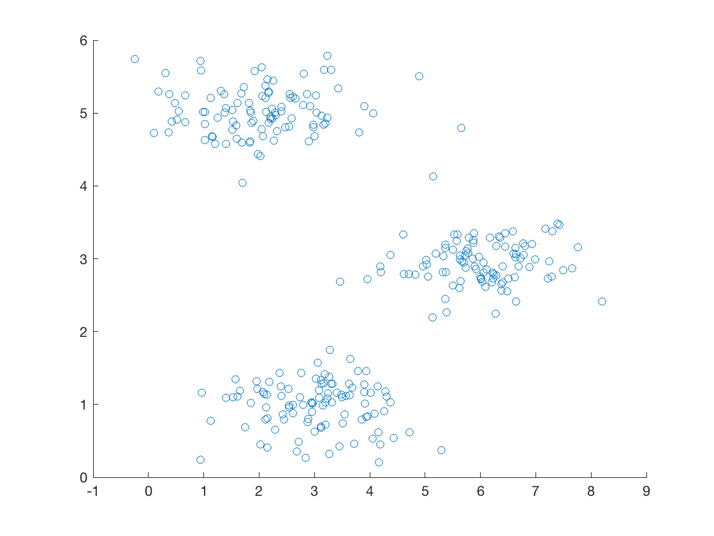
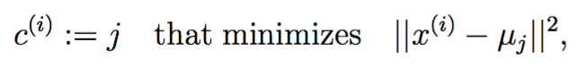

目录
 斯坦
斯坦


 
 福ML（Matlab
福ML（Matlab ）公开课，这次练习先实现K-means聚类算法并应用于图像压缩，然后实现PCA并用于人脸图像，最后展示高维数据的可视化技巧。我发现matlab做动画特别方便，顺手把算法执行过程动画化了。
）公开课，这次练习先实现K-means聚类算法并应用于图像压缩，然后实现PCA并用于人脸图像，最后展示高维数据的可视化技巧。我发现matlab做动画特别方便，顺手把算法执行过程动画化了。
K-means聚类
循序渐进，先在简单的2D数据上做实验：

先在上述2D数据集上熟悉K-means的原理，算法原理用matlab描述如下：
- % Initialize centroids
- centroids = kMeansInitCentroids(X, K);
- for iter = 1:iterations
- % Cluster assignment step: Assign each data point to the
- % closest centroid. idx(i) corresponds to cˆ(i), the index
- % of the centroid assigned to example i
- idx = findClosestCentroids(X, centroids);
- % Move centroid step: Compute means based on centroid
- % assignments
- centroids = computeMeans(X, idx, K);
- end
先选取K个重心，然后迭代：
-
将每个数据点分配给最近的重心
-
分配导致重心变化，于是重新计算重心
K-means最终一定会收敛，但视初始化的重心不同，最终得到的聚类结果不一定是最优的。所以实践的时候一般初始化不同的重心，然后选择损失函数最小的聚类结果。
随机初始化
实践中，一种初始化策略是随机选取K个数据点作为质心：
- function centroids = kMeansInitCentroids(X, K)
- %KMEANSINITCENTROIDS This function initializes K centroids that are to be
- %used in K-Means on the dataset X
- % centroids = KMEANSINITCENTROIDS(X, K) returns K initial centroids to be
- % used with the K-Means on the dataset X
- %
- % You should return this values correctly
- centroids = zeros(K, size(X, 2));
- % ====================== YOUR CODE HERE ======================
- % Instructions: You should set centroids to randomly chosen examples from
- % the dataset X
- %
- % Initialize the centroids to be random examples
- % Randomly reorder the indices of examples
- randidx = randperm(size(X, 1));
- % Take the first K examples as centroids
- centroids = X(randidx(1:K), :);
- % =============================================================
- end
寻找最近重心
对每个点，找到重心j使得

也就是欧氏距离最小。
其实现如下：
- function idx = findClosestCentroids(X, centroids)
- %FINDCLOSESTCENTROIDS computes the centroid memberships for every example
- % idx = FINDCLOSESTCENTROIDS (X, centroids) returns the closest centroids
- % in idx for a dataset X where each row is a single example. idx = m x 1
- % vector of centroid assignments (i.e. each entry in range [1..K])
- %
- % Set K
- K = size(centroids, 1);
- % You need to return the following variables correctly.
- idx = zeros(size(X,1), 1);
- % ====================== YOUR CODE HERE ======================
- % Instructions: Go over every example, find its closest centroid, and store
- % the index inside idx at the appropriate location.
- % Concretely, idx(i) should contain the index of the centroid
- % closest to example i. Hence, it should be a value in the
- % range 1..K
- %
- % Note: You can use a for-loop over the examples to compute this.
- %
- for i = 1:size(X,1)
- means = 0;
- for k = 1:size(X,2)
- means = means + (X(i,k) - centroids(1,k))^2;
- end
- id = 1;
- for j = 2: K
- temp = 0;
- for k = 1:size(X,2)
- temp = temp + (X(i,k) - centroids(j,k))^2;
- end
- if temp <= means
- means = temp;
- id = j;
- end
- end
- idx(i) = id;
- end
- % =============================================================
- end
上述代码可以应用于任意维度的数据，下面这段就是在计算任意维度空间两点间的欧氏距离，也许写成函数更好
- for k = 1:size(X,2)
- means = means + (X(i,k) - centroids(1,k))^2;
- end
调用方法如下：
- %% ================= Part 1: Find Closest Centroids ====================
- % To help you implement K-Means, we have divided the learning algorithm
- % into two functions -- findClosestCentroids and computeCentroids. In this
- % part, you shoudl complete the code in the findClosestCentroids function.
- %
- fprintf('Finding closest centroids.\n\n');
- % Load an example dataset that we will be using
- load('ex7data2.mat');
- % Select an initial set of centroids
- K = 3; % 3 Centroids
- initial_centroids = [3 3; 6 2; 8 5];
- % Find the closest centroids for the examples using the
- % initial_centroids
- idx = findClosestCentroids(X, initial_centroids);
- fprintf('Closest centroids for the first 3 examples: \n')
- fprintf(' %d', idx(1:3));
- fprintf('\n(the closest centroids should be 1, 3, 2 respectively)\n');
- fprintf('Program paused. Press enter to continue.\n');
- pause;
计算重心
第k个团的重心计算方法如下：

实现如下：
- function centroids = computeCentroids(X, idx, K)
- %COMPUTECENTROIDS returs the new centroids by computing the means of the
- %data points assigned to each centroid.
- % centroids = COMPUTECENTROIDS(X, idx, K) returns the new centroids by
- % computing the means of the data points assigned to each centroid. It is
- % given a dataset X where each row is a single data point, a vector
- % idx of centroid assignments (i.e. each entry in range [1..K]) for each
- % example, and K, the number of centroids. You should return a matrix
- % centroids, where each row of centroids is the mean of the data points
- % assigned to it.
- %
- % Useful variables
- [m n] = size(X);
- % You need to return the following variables correctly.
- centroids = zeros(K, n);
- % ====================== YOUR CODE HERE ======================
- % Instructions: Go over every centroid and compute mean of all points that
- % belong to it. Concretely, the row vector centroids(i,
- % should contain the mean of the data points assigned to
- % centroid i.
- %
- % Note: You can use a for-loop over the centroids to compute this.
- %
- for i = 1:K
- Ck = 0;
- for j = 1:m
- if idx(j) == i;
- Ck = Ck + 1;
- for k = 1:n
- centroids(i,k) = centroids(i,k) + X(j,k);
- end
- end
- end
- for k = 1:n
- centroids(i,k) = centroids(i,k) / Ck;
- end
- end
- % =============================================================
- end

运行K-means
将这两个步骤结合起来，就得到了可运行的K-means：
- function [centroids, idx] = runkMeans(X, initial_centroids, ...
- max_iters, plot_progress)
- %RUNKMEANS runs the K-Means algorithm on data matrix X, where each row of X
- %is a single example
- % [centroids, idx] = RUNKMEANS(X, initial_centroids, max_iters, ...
- % plot_progress) runs the K-Means algorithm on data matrix X, where each
- % row of X is a single example. It uses initial_centroids used as the
- % initial centroids. max_iters specifies the total number of interactions
- % of K-Means to execute. plot_progress is a true/false flag that
- % indicates if the function should also plot its progress as the
- % learning happens. This is set to false by default. runkMeans returns
- % centroids, a Kxn matrix of the computed centroids and idx, a m x 1
- % vector of centroid assignments (i.e. each entry in range [1..K])
- %
- % Set default value for plot progress
- if ~exist('plot_progress', 'var') || isempty(plot_progress)
- plot_progress = false;
- end
- % Plot the data if we are plotting progress
- if plot_progress
- figure;
- hold on;
- end
- % Initialize values
- [m n] = size(X);
- K = size(initial_centroids, 1);
- centroids = initial_centroids;
- previous_centroids = centroids;
- idx = zeros(m, 1);
- % Run K-Means
- for i=1:max_iters
- % Output progress
- fprintf('K-Means iteration %d/%d...\n', i, max_iters);
- if exist('OCTAVE_VERSION')
- fflush(stdout);
- end
- % For each example in X, assign it to the closest centroid
- idx = findClosestCentroids(X, centroids);
- % Optionally, plot progress here
- if plot_progress
- plotProgresskMeans(X, centroids, previous_centroids, idx, K, i);
- previous_centroids = centroids;
- frame=getframe(gcf);
- im=frame2im(frame);
- [I,map]=rgb2ind(im,256);
- if i==1
- imwrite(I,map,'ex.gif','gif','Loopcount',Inf,'DelayTime',0.2);
- else
- imwrite(I,map,'ex.gif','gif','WriteMode','append','DelayTime',0.2);
- end
- end
- % Given the memberships, compute new centroids
- centroids = computeCentroids(X, idx, K);
- end
- % Hold off if we are plotting progress
- if plot_progress
- hold off;
- end
- end
其中，我加了一段输出gif的代码：
- frame=getframe(gcf);
- im=frame2im(frame);
- [I,map]=rgb2ind(im,256);
- if i==1
- imwrite(I,map,'ex.gif','gif','Loopcount',Inf,'DelayTime',0.2);
- else
- imwrite(I,map,'ex.gif','gif','WriteMode','append','DelayTime',0.2);
- end
得到：
如果去掉getframe的参数gcf，则只捕捉图像部分：
想当初，输出gif的功能在Python里费了不少功夫，现在一两句话搞定，不得不说商业软件有商业软件的好处。
图像压缩
对于下面这张128*128的24位图片：

这是一只丑陋的鸟，每个像素由8位RGB分量组成，共2^24种颜色。加载方法如下：
- %% ============= Part 4: K-Means Clustering on Pixels ===============
- % In this exercise, you will use K-Means to compress an image. To do this,
- % you will first run K-Means on the colors of the pixels in the image and
- % then you will map each pixel on to it's closest centroid.
- %
- % You should now complete the code in kMeansInitCentroids.m
- %
- fprintf('\nRunning K-Means clustering on pixels from an image.\n\n');
- % Load an image of a bird
- A = double(imread('bird_small.png'));
- % If imread does not work for you, you can try instead
- % load ('bird_small.mat');
- A = A / 255; % Divide by 255 so that all values are in the range 0 - 1
- % Size of the image
- img_size = size(A);
- % Reshape the image into an Nx3 matrix where N = number of pixels.
- % Each row will contain the Red, Green and Blue pixel values
- % This gives us our dataset matrix X that we will use K-Means on.
- X = reshape(A, img_size(1) * img_size(2), 3);
其中，imread得到X*Y*3的矩阵。
这次任务是将其压缩为4位，共16种颜色表示的图片。原理是利用K-means算法在RGB3维空间中找出这16种颜色——像素们的重心，并将每个像素点表示为其中一种，于是完成24->4的压缩。
调用代码
- % Run your K-Means algorithm on this data
- % You should try different values of K and max_iters here
- K = 16;
- max_iters = 10;
- % When using K-Means, it is important the initialize the centroids
- % randomly.
- % You should complete the code in kMeansInitCentroids.m before proceeding
- initial_centroids = kMeansInitCentroids(X, K);
- % Run K-Means
- [centroids, idx] = runkMeans(X, initial_centroids, max_iters);
- fprintf('Program paused. Press enter to continue.\n');
- pause;
idx就是每个像素点最近的重心的index，将像素点替换为重心就得到压缩后的图片：
- %% ================= Part 5: Image Compression ======================
- % In this part of the exercise, you will use the clusters of K-Means to
- % compress an image. To do this, we first find the closest clusters for
- % each example. After that, we
- fprintf('\nApplying K-Means to compress an image.\n\n');
- % Find closest cluster members
- idx = findClosestCentroids(X, centroids);
- % Essentially, now we have represented the image X as in terms of the
- % indices in idx.
- % We can now recover the image from the indices (idx) by mapping each pixel
- % (specified by it's index in idx) to the centroid value
- X_recovered = centroids(idx,:);
- % Reshape the recovered image into proper dimensions
- X_recovered = reshape(X_recovered, img_size(1), img_size(2), 3);
- % Display the original image
- subplot(1, 2, 1);
- imagesc(A);
- title('Original');
- % Display compressed image side by side
- subplot(1, 2, 2);
- imagesc(X_recovered)
- title(sprintf('Compressed, with %d colors.', K));
- fprintf('Program paused. Press enter to continue.\n');
- pause;
其中，imagesc是Display image with scaled colors的缩写，默认使用colormap的全部色彩。
运行后得到：
似乎变得更丑了。
主成分分析
这部分先利用一个简单的2D数据集熟悉熟悉PCA，然后应用到5000张人脸组成的数据集上。
简单数据集
将下面这个2D数据集降维到1维：
- %% ================== Part 1: Load Example Dataset ===================
- % We start this exercise by using a small dataset that is easily to
- % visualize
- %
- fprintf('Visualizing example dataset for PCA.\n\n');
- % The following command loads the dataset. You should now have the
- % variable X in your environment
- load ('ex7data1.mat');
- % Visualize the example dataset
- plot(X(:, 1), X(:, 2), 'bo');
- axis([0.5 6.5 2 8]); axis square;
- fprintf('Program paused. Press enter to continue.\n');
- pause;
得到：

实现PCA
原理可以参考cs229的视频，或者《Python循序渐进主成分分析》
大致分为两步
-
计算协方差矩阵
-
利用matlab的SVD方法得到特征向量和特征值
数据标准化
在执行PCA之前必须注意，要将数据标准化到均值=0，范围相同。实现如下：
- function [X_norm, mu, sigma] = featureNormalize(X)
- %FEATURENORMALIZE Normalizes the features in X
- % FEATURENORMALIZE(X) returns a normalized version of X where
- % the mean value of each feature is 0 and the standard deviation
- % is 1. This is often a good preprocessing step to do when
- % working with learning algorithms.
- mu = mean(X);
- X_norm = bsxfun(@minus, X, mu);
- sigma = std(X_norm);
- X_norm = bsxfun(@rdivide, X_norm, sigma);
- % ============================================================
- end
跟前面几次练习一摸一样。
实现
第一步，计算协方差矩阵，也就是

这里X是按行排列的数据点构成的矩阵。
之后调用[U,S,V] = SVD(X)，得到的U就是主成分矩阵，S矩阵对角线上就是相应特征向量对应的特征值。
实现如下：
- function [U, S] = pca(X)
- %PCA Run principal component analysis on the dataset X
- % [U, S, X] = pca(X) computes eigenvectors of the covariance matrix of X
- % Returns the eigenvectors U, the eigenvalues (on diagonal) in S
- %
- % Useful values
- [m, n] = size(X);
- % You need to return the following variables correctly.
- U = zeros(n);
- S = zeros(n);
- % ====================== YOUR CODE HERE ======================
- % Instructions: You should first compute the covariance matrix. Then, you
- % should use the "svd" function to compute the eigenvectors
- % and eigenvalues of the covariance matrix.
- %
- % Note: When computing the covariance matrix, remember to divide by m (the
- % number of examples).
- %
- Sigma = X' * X / m;
- [U, S, V] = svd(Sigma);
- % =========================================================================
- end
调用并可视化特征向量：
- %% =============== Part 2: Principal Component Analysis ===============
- % You should now implement PCA, a dimension reduction technique. You
- % should complete the code in pca.m
- %
- fprintf('\nRunning PCA on example dataset.\n\n');
- % Before running PCA, it is important to first normalize X
- [X_norm, mu, sigma] = featureNormalize(X);
- % Run PCA
- [U, S] = pca(X_norm);
- % Compute mu, the mean of the each feature
- % Draw the eigenvectors centered at mean of data. These lines show the
- % directions of maximum variations in the dataset.
- hold on;
- drawLine(mu, mu + 1.5 * S(1,1) * U(:,1)', '-k', 'LineWidth', 2);
- drawLine(mu, mu + 1.5 * S(2,2) * U(:,2)', '-k', 'LineWidth', 2);
- hold off;
- fprintf('Top eigenvector: \n');
- fprintf(' U(:,1) = %f %f \n', U(1,1), U(2,1));
- fprintf('\n(you should expect to see -0.707107 -0.707107)\n');
- fprintf('Program paused. Press enter to continue.\n');
- pause;
得到

这个效果跟《Python循序渐进主成分分析》相比真是弱爆了。
PCA降维
原向量乘以主成分矩阵前K列得到降维后的向量：
- function Z = projectData(X, U, K)
- %PROJECTDATA Computes the reduced data representation when projecting only
- %on to the top k eigenvectors
- % Z = projectData(X, U, K) computes the projection of
- % the normalized inputs X into the reduced dimensional space spanned by
- % the first K columns of U. It returns the projected examples in Z.
- %
- % You need to return the following variables correctly.
- Z = zeros(size(X, 1), K);
- % ====================== YOUR CODE HERE ======================
- % Instructions: Compute the projection of the data using only the top K
- % eigenvectors in U (first K columns).
- % For the i-th example X(i,:), the projection on to the k-th
- % eigenvector is given as follows:
- % x = X(i, :)';
- % projection_k = x' * U(:, k);
- %
- x = X';
- Z = x' * U(:, 1:K);
- % =============================================================
- end
调用方法
- %% =================== Part 3: Dimension Reduction ===================
- % You should now implement the projection step to map the data onto the
- % first k eigenvectors. The code will then plot the data in this reduced
- % dimensional space. This will show you what the data looks like when
- % using only the corresponding eigenvectors to reconstruct it.
- %
- % You should complete the code in projectData.m
- %
- fprintf('\nDimension reduction on example dataset.\n\n');
- % Plot the normalized dataset (returned from pca)
- plot(X_norm(:, 1), X_norm(:, 2), 'bo');
- axis([-4 3 -4 3]); axis square
- % Project the data onto K = 1 dimension
- K = 1;
- Z = projectData(X_norm, U, K);
- fprintf('Projection of the first example: %f\n', Z(1));
- fprintf('\n(this value should be about 1.481274)\n\n');
还原数据
既然有projectData，那么就可以利用转置矩阵将映射后的数据（一维）有损还原：
- function X_rec = recoverData(Z, U, K)
- %RECOVERDATA Recovers an approximation of the original data when using the
- %projected data
- % X_rec = RECOVERDATA(Z, U, K) recovers an approximation the
- % original data that has been reduced to K dimensions. It returns the
- % approximate reconstruction in X_rec.
- %
- % You need to return the following variables correctly.
- X_rec = zeros(size(Z, 1), size(U, 1));
- % ====================== YOUR CODE HERE ======================
- % Instructions: Compute the approximation of the data by projecting back
- % onto the original space using the top K eigenvectors in U.
- %
- % For the i-th example Z(i,:), the (approximate)
- % recovered data for dimension j is given as follows:
- % v = Z(i, :)';
- % recovered_j = v' * U(j, 1:K)';
- %
- % Notice that U(j, 1:K) is a row vector.
- %
- v = Z';
- X_rec = v' * U(:, 1:K)';
- % =============================================================
- end
这里的还原是有损的，毕竟少了一个维度。
调用并可视化
- X_rec = recoverData(Z, U, K);
- fprintf('Approximation of the first example: %f %f\n', X_rec(1, 1), X_rec(1, 2));
- fprintf('\n(this value should be about -1.047419 -1.047419)\n\n');
- % Draw lines connecting the projected points to the original points
- hold on;
- plot(X_rec(:, 1), X_rec(:, 2), 'ro');
- for i = 1:size(X_norm, 1)
- drawLine(X_norm(i,:), X_rec(i,:), '--k', 'LineWidth', 1);
- end
- hold off
- fprintf('Program paused. Press enter to continue.\n');
- pause;
得到
红色是降维后的一维点，蓝色是还原到二维的点。这个图还是很直观的，将投影解释得很清楚。
人脸数据集
这部分将PCA应用于人脸数据集，可视化PCA之后与还原的效果。
每张数据都是32*32的灰度图，加载与可视化的代码与神经网络那次相同，最后得到：
主成分分析
每张图片都是1024维的向量，跟普通的数据点没什么两样，对其进行主成分：
- %% =========== Part 5: PCA on Face Data: Eigenfaces ===================
- % Run PCA and visualize the eigenvectors which are in this case eigenfaces
- % We display the first 36 eigenfaces.
- %
- fprintf(['\nRunning PCA on face dataset.\n' ...
- '(this mght take a minute or two ...)\n\n']);
- % Before running PCA, it is important to first normalize X by subtracting
- % the mean value from each feature
- [X_norm, mu, sigma] = featureNormalize(X);
- % Run PCA
- [U, S] = pca(X_norm);
- % Visualize the top 36 eigenvectors found
- displayData(U(:, 1:36)');
- fprintf('Program paused. Press enter to continue.\n');
- pause;
注意到特征向量跟原数据的维度一模一样，可以直接显示出来，于是这里可视化了前36个特征向量：
降维与还原
取维度=100，像上次那样进行降维与还原：
- %% ============= Part 6: Dimension Reduction for Faces =================
- % Project images to the eigen space using the top k eigenvectors
- % If you are applying a machine learning algorithm
- fprintf('\nDimension reduction for face dataset.\n\n');
- K = 100;
- Z = projectData(X_norm, U, K);
- fprintf('The projected data Z has a size of: ')
- fprintf('%d ', size(Z));
- fprintf('\n\nProgram paused. Press enter to continue.\n');
- pause;
- %% ==== Part 7: Visualization of Faces after PCA Dimension Reduction ====
- % Project images to the eigen space using the top K eigen vectors and
- % visualize only using those K dimensions
- % Compare to the original input, which is also displayed
- fprintf('\nVisualizing the projected (reduced dimension) faces.\n\n');
- K = 100;
- X_rec = recoverData(Z, U, K);
- % Display normalized data
- subplot(1, 2, 1);
- displayData(X_norm(1:100,:));
- title('Original faces');
- axis square;
- % Display reconstructed data from only k eigenfaces
- subplot(1, 2, 2);
- displayData(X_rec(1:100,:));
- title('Recovered faces');
- axis square;
- fprintf('Program paused. Press enter to continue.\n');
- pause;
得到
这里没办法可视化100维的图片，因为其不再是像素表示的，而是更抽象的低维表示，只能可视化还原后的数据。即便是还原，也是有损的，不过感觉效果还不错，大家颜值下降不大。
为了可视化进行的PCA
拿上次那只丑鸟做例子，如果将每个像素放到RGB三维空间中去:
- %% === Part 8(a): Optional (ungraded) Exercise: PCA for Visualization ===
- % One useful application of PCA is to use it to visualize high-dimensional
- % data. In the last K-Means exercise you ran K-Means on 3-dimensional
- % pixel colors of an image. We first visualize this output in 3D, and then
- % apply PCA to obtain a visualization in 2D.
- close all; close all; clc
- % Re-load the image from the previous exercise and run K-Means on it
- % For this to work, you need to complete the K-Means assignment first
- A = double(imread('bird_small.png'));
- % If imread does not work for you, you can try instead
- % load ('bird_small.mat');
- A = A / 255;
- img_size = size(A);
- X = reshape(A, img_size(1) * img_size(2), 3);
- K = 16;
- max_iters = 10;
- initial_centroids = kMeansInitCentroids(X, K);
- [centroids, idx] = runkMeans(X, initial_centroids, max_iters);
- % Sample 1000 random indexes (since working with all the data is
- % too expensive. If you have a fast computer, you may increase this.
- sel = floor(rand(1000, 1) * size(X, 1)) + 1;
- % Setup Color Palette
- palette = hsv(K);
- colors = palette(idx(sel), :);
- % Visualize the data and centroid memberships in 3D
- figure;
- scatter3(X(sel, 1), X(sel, 2), X(sel, 3), 10, colors);
- title('Pixel dataset plotted in 3D. Color shows centroid memberships');
- for i=1:2:360
- %view(a,b):a????b????
- view(i,20);
- pause(0.06);
- frame=getframe(gcf);
- im=frame2im(frame);
- [I,map]=rgb2ind(im,256);
- if i==1
- imwrite(I,map,'ex.gif','gif','Loopcount',Inf,'DelayTime',0.2);
- else
- imwrite(I,map,'ex.gif','gif','WriteMode','append','DelayTime',0.2);
- end
- end
- fprintf('Program paused. Press enter to continue.\n');
- pause;
我加了段动画，会得到：
高维的数据并不适合可视化，因为你无法在论文里贴一段动画:-D，所有就有先降维再可视化的需求。
PCA降维
将其视作普通数据降维即可：
- %% === Part 8(b): Optional (ungraded) Exercise: PCA for Visualization ===
- % Use PCA to project this cloud to 2D for visualization
- % Subtract the mean to use PCA
- [X_norm, mu, sigma] = featureNormalize(X);
- % PCA and project the data to 2D
- [U, S] = pca(X_norm);
- Z = projectData(X_norm, U, 2);
- % Plot in 2D
- figure;
- plotDataPoints(Z(sel, :), idx(sel), K);
- title('Pixel dataset plotted in 2D, using PCA for dimensionality reduction');
- fprintf('Program paused. Press enter to continue.\n');
- pause;
得到
如果用鼠标旋转上面的三维视图，应该可以得到类似这张平面图的视图，这就是降维的直观解释了。
笑脸是 : )
稍微简洁点
findClosestCentroids.m 我的实现是: ;
;
K = size(centroids, 1);
idx = zeros(size(X,1), 1);
[m, n] = size(X)
for i = 1 : m
X_tmp = ones(K, 1) * X(i,
[val, idx(i, 1)]= min(sum((X_tmp – centroids).^2, 2), [], 1);
end
computeCentroids.m 我的实现是: = sum(X(find(i == idx),
= sum(X(find(i == idx),  , 1) ./ num;
, 1) ./ num;
[m n] = size(X);
centroids = zeros(K, n);
for i = 1 : K
num = size(find(i == idx), 1);
centroids(i,
end